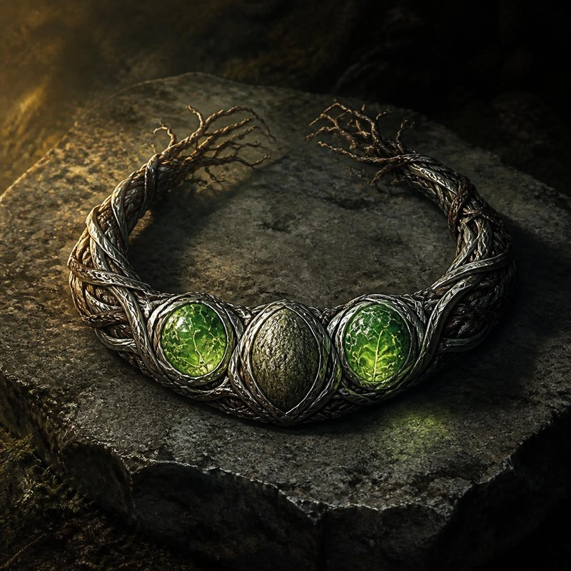

Da consegnare dopo la Battaglia di Rethmar. Fino ad allora vale la scheda Fiorita.

La Leggenda della Radice
«Le altre le ha fatte il Forgiatore, col fuoco e col martello. Questa no. Quando il Cuore di Moradin si spese sul petto di Hella, la sua mano trovò tre semi che non sapeva aprire, e disse che alla forgia serve il metallo, e che un dono strappato è ferro freddo. I semi li aprirono i compagni, ciascuno con qualcosa di suo. La Collana non fu forgiata: germogliò. Per questo non è un oggetto di Hella. È la memoria del perché è tornata.»
Com'è fatta.
Un torc di legno e metallo, alla temperatura di chi lo porta. Tre semi: due verdi, venati d'adamantio come radici in miniatura; il terzo grigio-verde, ruvido come corteccia e più duro. Toccandolo senti il peso di una testa appoggiata sul petto. Le estremità affondano appena sotto la pelle, come radichette: toglierla è una scelta, mai un incidente.
Dal Cerchio Sacro i semi hanno buttato: dai gusci escono radici sottili e foglie piccole, e quando entri in un cerchio di alberi il torc si scalda come un respiro. Da Rethmar le radici del torc sono più lunghe, e dove Hella si ferma la terra sotto i piedi si muove appena, come se qualcosa stesse per alzarsi.
Slot: collo (artefatto minore) · Peso: nessuno che si senta · Legata a: Hella, e a nessun altro
Nata da: il rito della resurrezione, i semi di treant e i doni dei compagni
Funziona sempre: anche in forma selvatica o polimorfata. Ha le radici sotto la pelle, e non si fonde nel nuovo corpo
Stato: Foresta che Cammina, il terzo dei suoi stati
Poteri sempre attivi
Soprannaturale (Sop) | Sempre attivo | Potenziamento
+4 di potenziamento alla Saggezza. Non si somma al Periapto di Saggezza: vale il bonus più alto.
Soprannaturale (Sop) | Sempre attivo | Armatura naturale
+3 di armatura naturale alla CA. La pelle, sotto le dita, ha la grana della corteccia giovane.
Soprannaturale (Sop) | Sempre attivo | 18 m
Senti le emozioni delle piante e delle creature vegetali entro 18 m, anche corrotte, anche quando non parlano. +10 a Percepire Intenzioni contro di loro: sai cosa vogliono davvero.
Poteri da attivare
Soprannaturale (Sop) | 2/giorno | Azione standard | Durata 10 round
Diventi un Ibrido Treant Enorme: +8 FOR, portata estesa, schianti. Due volte al giorno, e tornano all'alba. Dentro un mythal la forma regge un round in più contro il prosciugamento.
Da quell'altezza vedi tutto il campo, e tutto il campo vede te.
Soprannaturale (Sop) | 3/giorno | Azione standard | Un seme per volta
Semi I e II: un Treant di Adamantio.
Seme III: Durik, se è stato distrutto. Torna subito, per un'ora; all'alba è di nuovo intero, e resta.
I semi usati tornano all'alba. Al massimo due Treant, uno per seme, e durano 1 ora. Evocarli tutti e due insieme costa caro: per un mese la Collana non evoca più: niente Treant, e se Durik cade non lo richiami subito, torna all'alba. Il resto della Collana non si spegne.
Treant di Adamantio · Grande · 90 pf · RD 10/adamantio · CA 24 · 9 m · 2 schianti +18 (2d8+9) · danni ×2 a oggetti e strutture, ignora la durezza sotto 20 · colpi come adamantio
Soprannaturale (Sop) | 1/giorno | Azione di round completo | 10 minuti
Pianti i tre semi attorno a te. Crescono in tre alberelli treant (Medi, 40 pf, CA 18, schianto +10, 1d8+6, intralciare 4,5 m, Riflessi CD 15). Dopo 3 round diventano treant giovani (Grandi, 80 pf, CA 22, schianto +14, 2d6+8) e ti chiudono in un muro vivo: per arrivare a te il nemico li deve abbattere tutti. Alla fine i semi tornano al torc. Non conta come Evocazione dei Guardiani, e non fa scattare il mese di silenzio.
Eco della scelta di Dauth
Se a Dauth hai purificato il boschetto morente invece di bruciarlo, i treant del Muro sono immuni alle spore e ai veleni della Madre dei Funghi. Se l'hai bruciato, il Muro resta com'è.
Soprannaturale (Sop) | 1/giorno | Azione standard
Una volta al giorno evochi tutti e due i Treant di Adamantio insieme senza il mese di silenzio. Il limite di due resta.
Soprannaturale (Sop) | Dentro un mythal o un cerchio druidico consacrato
In forma d'Avatar, dentro un mythal o un cerchio consacrato, colleghi il cerchio alla terra: le creature nemiche Enormi o più grandi entro 9 m hanno la velocità dimezzata dalle radici, e contro i soffi che attraversano l'area gli alleati hanno +4 ai TS.
◆ I semi, e i doni che portano ◆
Straordinario (Str) | 1/giorno | Azione immediata | Entro 9 m
Thorik ha dato il +2 di deflessione della Corona. Nel seme è diventato questo: prendi su di te il danno destinato a un alleato entro 9 m, dimezzato. E Thorik scatta verso chi hai protetto, accelerato per tre round.
Straordinario (Str) | Sempre attivo | Riduzione del danno
Tordek ha dato l'Ancoraggio della Montagna dei Bracieri. Nel seme è diventato RD 3/adamantino. È la tua unica riduzione del danno.
Magico (Mag) | A volontà | Azione standard | Contatto a distanza 18 m
Artemis ha dato un dado del suo colpo. Nel seme è diventato 2d6, metà rovi e metà fuoco. Non si prepara e non finisce. È magico come il colpo da cui viene: la resistenza agli incantesimi vale. Nel terzo seme c'è anche Durik: il suo ricordo è caduto lì, nel tuo viaggio.
Soprannaturale (Sop) | Una volta per seme | Azione immediata | Decidi tu
Nel momento del bisogno un seme germogliato rende al compagno quello che aveva dato, per una scena intera: la Corona torna a proteggere Thorik, l'Ancoraggio torna nei Bracieri, il colpo di Artemis torna pieno. Il seme resta germogliato, ma non restituisce mai più. Non consuma l'evocazione.
Un seme senza dono resta dormiente: evoca il suo guardiano, ma non germoglia niente sopra.
Foresta che Cammina è l'ultimo stato scritto. Quello che viene dopo non lo sa ancora nessuno, nemmeno la Collana.
Quando gli artefatti si parlano
La Collana è l'unico artefatto del gruppo fatto con pezzi degli altri tre, e con ciascuno ha un filo suo. Valgono con i portatori entro
9 m.
- Con i Bracieri — Il Bosco e la Fucina. Se Tordek ha donato, i tuoi Treant hanno resistenza al fuoco 10.
- Con l'Anello — Alba nel Sottobosco. Se Artemis ha donato, quando usa Luce di Lathander i tuoi Treant hanno Rigenerazione 1 per tutta la durata.
- Con la Corona — Radici della Memoria. Si sveglia quando pianterai la Ghianda al Cerchio della Quercia Vecchia: da allora, su terreno naturale, la Consapevolezza della Pietra di Thorik vale anche per te, e vedi attraverso i tuoi Treant.
E con lo Scudo del Custode, ogni volta che proteggi qualcuno, Thorik scatta verso di lui.
1/giorno | i quattro portatori entro 9 m | un'azione di movimento a testa | 7 round
Corona, Anello e Bracieri insieme fanno la Trinità. Con la Collana i fili diventano quattro, e un cerchio non è un triangolo con un lato in più: immuni a paura e charme, +4 sacro ai TS, +2 sacro alla CA, i colpi superano la RD come Buoni e Legali, Aura di Soggezione CD 20, per 7 round. E l'Ancoraggio torna: finché non vi muovete, nessuno di voi quattro si sbilancia o si spinge. Prende il posto della Trinità: le due non si sommano.
Vincolo. La Collana riconosce solo Hella, e serve la memoria della Terra. Non ha una voce, e non comanda. Ricorda.
Nessuno che si possa scrivere. Non si vende, non si rifà, e metà di quello che vale appartiene ad altri tre.
Germogliata al rito di resurrezione · data: ______________________
Fiorita al Cerchio Sacro · data: ______________________ · a Dauth il boschetto ☐ curato ☐ bruciato ☐ non risolto
Foresta che Cammina a Rethmar · data: ______________________
Doni: I ☐ · II ☐ · III ☐ Restituzioni spese: I ☐ · II ☐ · III ☐
_______________________________________________
Versione collana · S3 · r3 · 2026-09-25